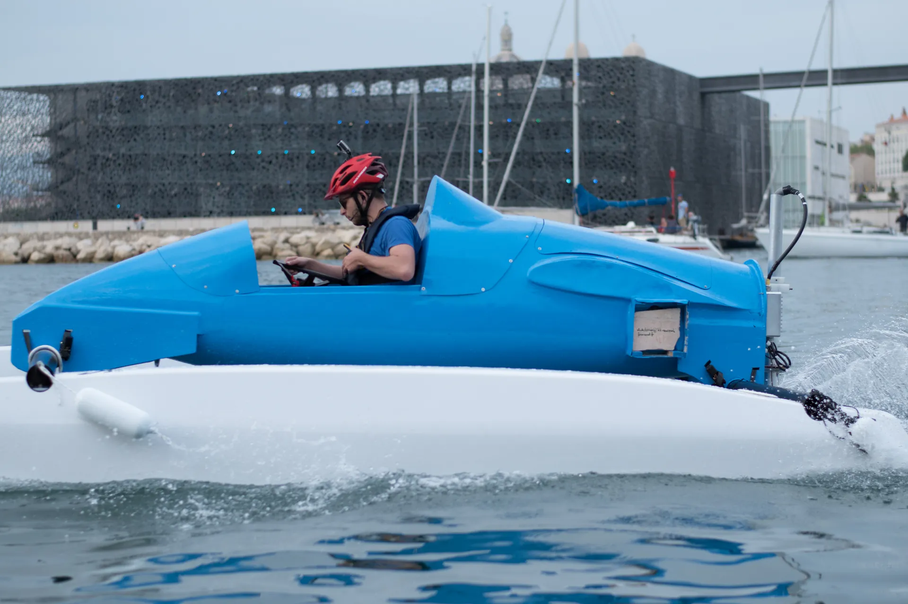

Notre histoire depuis 2018
D'une visite au Yacht Club de Monaco à la préparation du MEBC 2027 : neuf saisons d'ingénierie étudiante, de l'hydrogène aux batteries.
La genèse
HydroGadz naît de l'envie de quatre élèves des Arts et Métiers d'Aix-en-Provence : Thomas Grosjean, Joan Roig, Camille Bouin et Antoine Losito. Leur idée : mettre les étudiants et les professeurs au service de la transition énergétique, et montrer que l'hydrogène peut faire avancer les transports de demain.
Le nom vient de « Gadzarts », le surnom des élèves de l'école.
Nos saisons au MEBC
Chaque année, une nouvelle promotion reprend le bateau et l'améliore.
Le Blue-Blue
Un catamaran monoplace sur la coque commune du concours, propulsé par une pile à hydrogène : il ne rejetait que de l'eau. Conçu sous Catia, fabriqué dans nos moules, avec un cockpit d'inspiration aéronautique et une liaison radio vers le quai.

De l'hydrogène aux batteries
Aujourd'hui, le bateau fonctionne uniquement sur batteries. Voici les grandes étapes.